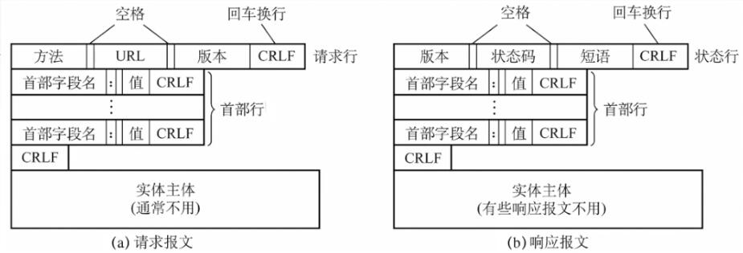

计算机网络——应用层
计算机网络——应用层
目录
应用层对应用程序的通信提供服务
- 应用层协议定义
- 应用进程交换的报文类型
请求或响应 - 各种报文类型的语法
如报文类型的语法
如报文中各个字段及其详细描述
- 应用进程交换的报文类型
- 应用层功能
- 文件传输, 访问和管理
- 电子邮件
- 虚拟终端
- 查询服务和远程作业登录
- 应用层的重要协议
- FTP
- SMTP, POP3
- HTTP
- DNS
网络应用模型
客户/服务器模型(Client/Server)
常用于 Web,文件传输 FTP, 远程登录, 电子邮件
服务器
提供计算服务的设备
- 特点
- 永久提供服务
- 永久性访问地址/域名
客户端
请求计算服务的设备
- 特点
- 与服务器通信, 使用服务器提供的服务
- 间歇性接入网络
- 可能使用动态 IP 地址
- 不与其他客户机直接通信
P2P 模型(对等模型)
- 不存在永远在线的服务器
- 每个主机既可以提供服务, 也可以请求服务
- 任意端系统/节点之间可直接通信
- 节点间歇性接入网络
- 节点可能改变 IP 地址
- 可扩展性好
- 网络健壮性强
域名解析系统(DNS)
域名
- 根
- 顶级域名
- 国家顶级域名
- 通用顶级域名
- 基础结构域名/反向域名
- 二级域名
- 类别域名
- 行政区域名
- 三级域名
- 四级域名
域名服务器
域名服务器的层次结构只有上三层
- 根域名服务器
知道所有顶级域名服务器的域名和 IP 地址 - 顶级域名服务器
管理该顶级域名服务器注册的所有二级域名 - 权限域名服务器
负责一个区的域名服务器DNS 服务器时间的管辖范围
- 本地域名服务器
主机发出 DNS 查询请求时, 先发给本地域名服务器, 若查询失败则询问根域名服务器
递归查询
- 主机发出 DNS 查询请求时, 先发给本地域名服务器, 若查询失败则询问根域名服务器
- 根域名服务器中也没有记录, 则向下询问顶级域名服务器
- 顶级域名服务器中也没有记录, 则向下询问权限域名服务器
迭代查询
- 主机发出 DNS 查询请求时, 先发给本地域名服务器, 若查询失败则询问根域名服务器
- 根域名服务器中也没有记录, 则主机询问顶级域名服务器
- 顶级域名服务器中也没有记录, 则主机询问权限域名服务器
若 DNS 服务器中没有记录, 则会告诉主机取哪个 DNS 服务器查询
文件传送协议 FTP
提供不同种类主机系统之间的文件传送能力
FTP 使用 TCP 实现可靠传输
简单文件传送协议 TFTP
- FTP 基于客户/服务器协议
- 用户通过客户机程序连接至远程计算机上运行的服务器程序
- 依照 FTP 协议提供服务, 进行文件传送的计算机就是 FTP 服务器
- 连接 FTP 服务器, 遵循 FTP 协议与服务器传送文件的电脑就是 FTP 客户端
工作原理
- 登录
ftp 地址和用户名密码
或匿名登录 - 服务器进程
1 个主进程, n 个从属进程每个从属进程可处理单个客户请求
- 控制连接和数据连接
控制连接(使用 21 号端口)在整个会话过程中都打开, 客户发送的请求都通过控制连接发送
数据连接专门用来传送文件(服务器在收到客户端的数据请求时建立)控制连接始终保持
数据连接保持一段时间 - 数据连接端口
- 主动方式使用 TCP 20 端口
服务器端主动告诉客户端数据连接端口为 20 - 被动方式由服务器和客户机自行协商决定(端口>1024)
客户端向服务器发送询问得到数据连接端口号
FTP 传输模式
- 文本模式
ASCII 模式, 以文本序列传输数据 - 二进制模式
Binary 模式. 以二进制序列传输数据
电子邮件
采用客户/服务器方式, 每台邮件服务器即可为客户, 也可为服务器
内容
信封
收件人邮箱内容
首部
To(发送目标邮件地址), Subject(主题)这两个需自行填写
From(发件人邮件地址), Date(日期)
这两个自动生成
主体
内容
组成结构
- 用户代理
电子邮件客户端软件- 功能
- 撰写
写邮件 - 显示
看邮件 - 处理
收发邮件等 - 通信
发送邮件到邮件服务器
从邮件服务器读取邮件
- 邮件服务器
- 功能
- 发送和接收邮件
发送邮件到其他邮件服务器
从其他邮件服务器接收邮件 - 向发件人报告邮件传输结果
- 发送和接收邮件
- 协议
- SMTP
将邮件发出 - POP3
接收邮件使用的协议
- 发送方通过用户代理写好邮件, 并发送到邮件服务器
- 邮件服务器将邮件发送给接收端的邮件服务器
- 接收方从邮件服务器中读取邮件, 通过客户代理查看
SMTP(简单邮件传输协议)
STMP 使用 TCP, 端口号 25, 客户/服务器模式
- SMTP 规定了两个相互通信的 SMTP 进程之间如何交换信息
- 负责发送邮件的 SMTP 进程就是 SMTP 客户, 负责接收邮件的进程就是 SMTP 服务器
- SMTP 规定 14 条命令和 21 种应答信息
- 缺点
- 不能传送可执行文件和其他二进制对象
- 仅限于传送 7 位的 ADCII 码, 不能传送其他非英语国家的文字
- 会拒绝超过一定长度的邮件
通用因特网邮件扩充 MIME
将非 ASCII 码内容转换成 ASCII 码在发送
使电子邮件系统可有支持声音,图像和多种国家语言等
POP3(邮局协议)
TCP 连接, 端口号 110, 客户/服务器模式
工作方式
- 下载并保留(在服务器)
保留在服务器种 - 下载并删除
从服务器中删除
IMAP(网际报文存取协议)
用户 PC 上的 IMAP 客户程序打开 IMAP 服务器的邮箱时, 用户可以看到邮箱的首部
用户需要打开某个邮件, 该邮件才上传到用户的计算机上
可以让用户在不同地方使用不同计算机随时上网阅读处理邮件, 运行只读取邮件中的某一部分
通信过程
- 连接建立
询问 SMTP 服务器是否有能力接收邮件, 有能力则建立连接 - 邮件发送
- 连接释放
邮件发完后连接释放
基于万维网的电子邮件
方便
用户通过 HTTP 协议使用用户代理
万维网
万维网使一个大规模的联机的信息存储所(资料空间), 使无数个网络站点和网页的集合
同一资源定位符 URL
不区分大小写
唯一标志资源
- 组成
<协议>://<主机>:<端口>/<路径>
- 组成
万维网使用客户/服务器方式工作
万维网使用超文本标记语言 HTML
HTTP(超文本传输协议)
HTTP 定义浏览器如何向万维网服务器请求万维网文档以及服务器如何将文档传送给浏览器
具体过程
- 浏览器分析 URL
- 浏览器向 DNS 请求解析 IP 地址
- DNS 解析出 IP 地址
- 浏览器与服务器建立 TCP 连接
- 浏览器发出取文件命令
- 服务器响应
- 释放 TCP 连接
- 浏览器显示
特点
- HTTP 协议是无状态的
无记忆 - 采用 TCP 作为运输层协议,单 HTTP 协议本身是无连接的
通信双方交换 HTTP 报文之前不需要先建立 HTTP 连接
HTTP 连接方式
持久连接
服务器响应后依然保持连接, 之后请求都通过该连接来请求- 非流水线
相当于发送完请求后, 要等待响应才能发送下一个请求 - 流水线
可以连续发送请求
- 非流水线
非持久连接
服务器响应后, 释放连接, 发送新请求时要重新建立连接
时间消耗较长
HTTP 报文结构
HTTP 报文时面向文本的, 每个字段都是 ASCII 串
分为请求报文和响应报文

- 首部字段
说明浏览器,服务器和报文主题的一些信息
计算机网络——应用层